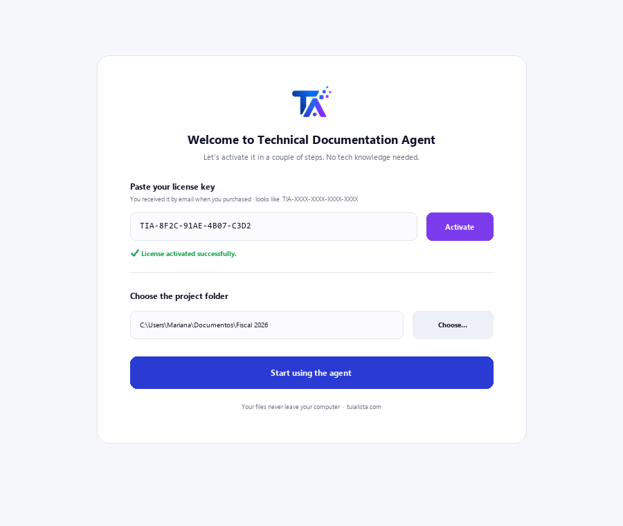
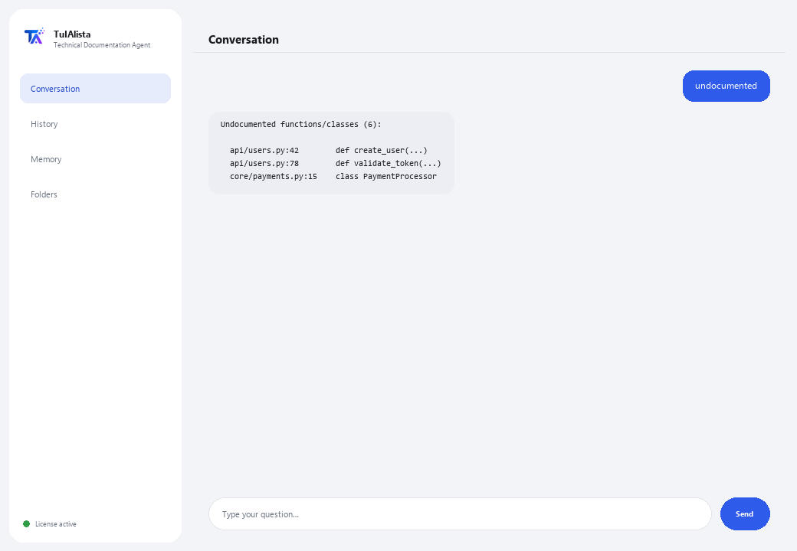

Technical Documentation Agent
Generates and maintains your software's technical documentation straight from your own code, without the code ever leaving your machine.
What does it solve and what do you need?
Documentation always falls behind: nobody has time to write the README, explain what each file does, or maintain an FAQ. This agent scans your project and does it for you — it supports Python, JS/TS, Java, C/C++, Go, PHP, Ruby, SQL, and even RPG (AS/400/IBM i) and COBOL.
- You need: your license key (TIA-XXXX-XXXX-XXXX-XXXX) and the project folder. No Python or technical knowledge to install it (though it's built for development teams).
- First result in under 5 minutes: install, activate, pick your folder, and run readme for your first generated README.
- Your source code never leaves your computer — the scan runs locally.
soporte@tuialista.com or visit tuialista.com/soporte — we usually reply the same business day.1 What this agent does
You point it at the project folder and it:
- Scans the code and extracts its structure (functions, classes, comments, imports).
- Generates a professional README for the project (structure, components, dependencies, usage).
- Documents a specific file in detail (purpose, functions, parameters, notes).
- Generates a technical FAQ with questions and answers based on the code.
- Detects undocumented functions and classes.
- Builds a dependency map between files (internal and external).
- Answers free-form questions about the code.
Supports many languages: Python, JavaScript/TypeScript, Java, Kotlin, C/C++, Go, PHP, Ruby, SQL, and even RPG (AS/400/IBM i) and COBOL, among others.
2 Installation (2 minutes)
For Windows. No constant internet connection needed, and nothing gets uploaded to the cloud.
Download the installer from tuialista.com/descargar (Technical Documentation agent) and open it. It creates a desktop shortcut with the logo — no Python or terminal needed.
Double-click the new icon. Paste your license key (you received it by email when you bought it) and click Activate. You'll see a green checkmark once it's valid.
Select the project folder and click Start using the agent. Next time it starts right up — it remembers your key and your folder.

3 How to use it
The agent opens a chat window, like a messaging app — not a programmer's black screen. You type your command or question in the text box below, hit Send (or Enter), and the reply appears as a message, just like in this real image:

The commands below are the words you can type in that same text box:
> readmeA professional README.md with name, structure, main components, how they relate, dependencies and usage instructions.
> faq8 to 12 technical FAQs (architecture, how something works, how to change functionality...) with answers based on your code.
> document <file>Detailed documentation for a file: purpose, each function/procedure (what it does, parameters, return value), dependencies and notes.
> undocumentedFunctions and classes with no comments or docstring, with file and line number.
> dependenciesDependency map: per file, which internal project modules and external libraries it uses.
> analyze <file>The detected structure of a file (classes, functions with their line number, imports) without calling AI.
> free-form question?Type any question in natural language, e.g.: where is the session token validated?
> exitEnds the session (exit also works).
4 Common use examples
Document a new project
readme → faq
Understand a legacy file
analyze legacy/process.cbl → document legacy/process.cbl — works even with COBOL or RPG from AS/400 systems.
Review the documentation debt
undocumented
Find your bearings in the code
how does the application connect to the database?
5 Frequently asked questions
Does my code get uploaded to the internet?
What languages does it support?
Do I need to install extra libraries?
Does it skip folders like node_modules?
Does it modify my code or write files?
How large can the project be?
Does it work for AS/400 code (RPG/COBOL)?
What language does it reply in?
Is the documentation 100% accurate?
Can I document a single file without scanning everything?
6 Troubleshooting
It shows “0 files indexed”
It can't find a file with document/analyze
The README skips some files
It says “Invalid license” or asks to reconnect
“No AI providers configured”
None of these fixed your problem? Write to us directly — we'll gladly look into it with you.
soporte@tuialista.com or visit tuialista.com/soporte — we usually reply the same business day.7 Privacy and confidentiality
Your source code never leaves your computer.
- The agent scans the project and extracts its structure locally, on your own machine. It doesn't upload your code to any server.
- Structure detection, documentation debt (undocumented) and the dependency map are all calculated on your machine.
- The only thing that travels over the internet is: (1) a check that your license is active — which doesn't include your code —, and (2) when generating a README, FAQ, documenting a file or answering a question, code fragments (the most relevant ones) are sent to the AI engine to draft the text.